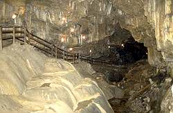

Poole's Cavern
Useful Information
 |
|---|
| Image: the entrance to Poole's Cavern |
| Location: | In Buxton, Peak District. |
| Open: |
Easter to NOV daily 9:30-17. Tours every 20min, last tour 16:45. Winter months by appointment only. [2008] |
| Fee: |
Adults GBP 7, Children GBP 4, Children (0-4) free, Seniors GBP 5.50, Unwaged GBP 5.50, Students GBP 5.50, Family ticket (2+3) GBP 20. Groups (10+): Adults GBP 5.50, Children GBP 3, Seniors GBP 4, Unwaged GBP 4, Students GBP 4. [2008] |
| Classification: |
 Karst cave,
river cave. Karst cave,
river cave.
|
| Light: | electric. |
| Dimension: | T=7°C |
| Guided tours: | Every 20min, D=50min, L=600m. First 100m suitable to wheelchairs! Flash photography OK, but no video. |
| Photography: | |
| Accessibility: | |
| Bibliography: |
Trevor D. Ford, David G. Allsop (1984):
Student's Guide to Poole's Cavern,
Buxton Country Park, 1984.
|
| Address: |
Poole's Cavern, Green Lane, Buxton, Derbyshire, SK17 9DH, Tel: +44-1298-26978, Fax: +44-1298-73563.
|
| As far as we know this information was accurate when it was published (see years in brackets), but may have changed since then. Please check rates and details directly with the companies in question if you need more recent info. |
|
History
| 1580 | first mentioned in the book Sidera by Sir Philip Sidney (1554-1586), nephew of the Earl of Shrewsbury. |
| 1622 | described by Michael Drayton in his Poly-olbion. |
| 1854 | to protect the cave and its speleothem the 6th Duke of Devonshire appointed Frank Redfern as custodian-cum-guide. |
| 1954 | cave sold to Mrs J Alcock. |
| 1857 | gas lighting installed. |
| 1965 | closed due to the death of Mr Alcock. |
| 1976 | electric lighting installed and cave reopened. |
Description
|  |
|---|
| Image: the view back the huge river passage of the cave. |
{kind=link}
The name Poole's Cavern comes from The robber Poole, who is reputed to have lived in the cave in the 15th century.
The cavern is part of the Wye system, the Wye is a subterranean brook that enters the cave at the end of the guided tour from a boulder choke. The whole tour path follows the banks of this river.
The huge entrance was easy to find and so the cave has been used by man since Neolithic times. Several archaeological digs have revealed Stone Age tools and artefacts, Bronze Age pottery and a wealth of Roman material.
The hill above the cave is called Grin Low and it is a fine viewpoint. On top stands Solomon's Temple, a folly built in 1895 by public subscription. This whole area is pock-marked with lime works and lime kilns, in which the stone was heated to change it to lime. To remove this eyesore the 6th Duke of Devonshire planted it with trees in the early 19th century, which has now led to a mature wood of beech, ash and elm.
Right above the cave once a large limestone quarry existed. This quarry was closed and in the 1980s bought by the city council of Buxton. In order to use it as a campground, limestone sand and lime - a remains of the quarry - was used to fill in the craters to level the floor. Nobody imagined, that because of its enormous surface, this limestone sand is very easy to solute. So the water in the cave is very high in calcite and the flowstones below the former quarry grow five times as fast elsewhere! The formations have been coloured by minerals leached out of the lime-tips on the hillside above. These include manganese (blue-grey) and iron (orange). A rather strange formation is called Poached Egg, as a rather flat white stalagmite has a round, yellow bulb in the middle formed from the lime remains. The result actually looks like a fried egg.
|
|
| Poole's Cavern Gallery |
{kind=link}
{kind=link}
{kind=link}
{kind=link}
{kind=link}
{kind=link}
{kind=link}
- See also
 History of Poole's Cavern
by Tony Oldham (2002).
History of Poole's Cavern
by Tony Oldham (2002).- A tour thro' the whole island of Great Britain, divided into circuits or journies,
by Daniel Defoe (2002), Letter 8, Part 2: The Peak District.
 Search Google for "Poole's Cavern"
Search Google for "Poole's Cavern" Google Earth Placemark
Google Earth Placemark Poole's Cavern - Wikipedia
(visited: 24-SEP-2010)
Poole's Cavern - Wikipedia
(visited: 24-SEP-2010) Poole's Cavern,
official website.
Poole's Cavern,
official website.